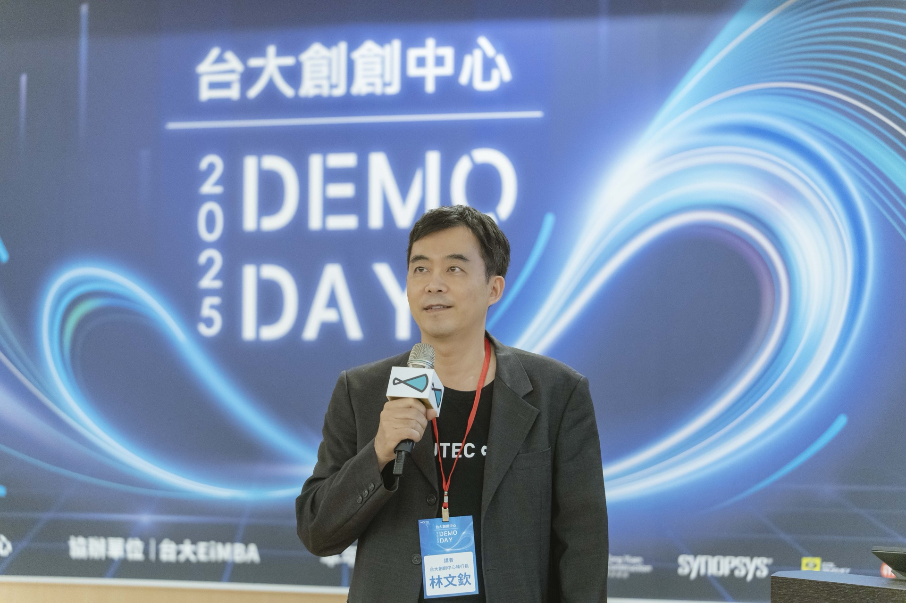

<!DOCTYPE html>
<html lang="zh-TW">
<head>
  <meta charset="UTF-8">
  <meta name="viewport" content="width=device-width, initial-scale=1.0">
  <title>成功校友 Alumni — 台大創創中心 NTUTEC</title>
  <link rel="preconnect" href="https://fonts.googleapis.com">
  <link rel="preconnect" href="https://fonts.gstatic.com" crossorigin>
  <link href="https://fonts.googleapis.com/css2?family=Noto+Sans+TC:wght@300;400;500;600;700&family=Lato:wght@100;300;400;700;900" rel="stylesheet">
  <script src="https://unpkg.com/react@18.3.1/umd/react.development.js" integrity="sha384-hD6/rw4ppMLGNu3tX5cjIb+uRZ7UkRJ6BPkLpg4hAu/6onKUg4lLsHAs9EBPT82L" crossorigin="anonymous"></script>
  <script src="https://unpkg.com/react-dom@18.3.1/umd/react-dom.development.js" integrity="sha384-u6aeetuaXnQ38mYT8rp6sbXaQe3NL9t+IBXmnYxwkUI2Hw4bsp2Wvmx4yRQF1uAm" crossorigin="anonymous"></script>
  <script src="https://unpkg.com/lucide-react@0.474.0/dist/umd/lucide-react.js" crossorigin="anonymous"></script>
  <script src="https://unpkg.com/@babel/standalone@7.29.0/babel.min.js" integrity="sha384-m08KidiNqLdpJqLq95G/LEi8Qvjl/xUYll3QILypMoQ65QorJ9Lvtp2RXYGBFj1y" crossorigin="anonymous"></script>
  <style>
    *, *::before, *::after { box-sizing: border-box; margin: 0; padding: 0; }
    :root {
      --navy: #1A2E4A; --teal: #58A8A0; --mint: #00D8C8;
      --white: #FAFAF8; --offwhite: #F7F5F1; --rule: #E0E0DC;
      --text: #1A1A18; --muted: #6C727B;
      --serif: 'Noto Sans TC', sans-serif; --mono: 'Lato', sans-serif; --sans: 'Lato', 'Noto Sans TC', sans-serif; --italic: 'Cormorant Garamond', Georgia, serif;
    }
    html { scroll-behavior: smooth; overflow-x: hidden; max-width: 100vw; }
    body { font-family: var(--sans); background: var(--offwhite); color: var(--text); overflow-x: hidden; max-width: 100vw; }
    a { color: inherit; text-decoration: none; }
    ::selection { background: var(--mint); color: var(--navy); }
    .sec-en { font-family: var(--mono); font-size: 11px; font-weight: 500; letter-spacing: 0.14em; color: var(--teal); text-transform: uppercase; display: block; margin-bottom: 12px; }
    .sec-title-hl { font-family: var(--serif); font-weight: 600; line-height: 1.4; color: var(--navy); display: inline; background: var(--mint); box-decoration-break: clone; -webkit-box-decoration-break: clone; padding: 4px 10px; }
  </style>
</head>
<body>
<div id="root"></div>
<script type="text/babel" src="shared.js?v=2"></script>
<script type="text/babel">
const { useState, useEffect, useRef } = React;

function useInView(opts = {}) {
  const ref = useRef(null);
  const [v, setV] = useState(false);
  useEffect(() => {
    const obs = new IntersectionObserver(([e]) => { if (e.isIntersecting) { setV(true); obs.disconnect(); } }, { threshold: opts.threshold || 0.12 });
    if (ref.current) obs.observe(ref.current);
    return () => obs.disconnect();
  }, []);
  return [ref, v];
}

function AnimUp({ children, delay = 0, style = {} }) {
  const [ref, v] = useInView();
  return <div ref={ref} style={{ opacity: v ? 1 : 0, transform: v ? 'none' : 'translateY(28px)', transition: `opacity 0.7s cubic-bezier(0.22,1,0.36,1) ${delay}ms, transform 0.7s cubic-bezier(0.22,1,0.36,1) ${delay}ms`, ...style }}>{children}</div>;
}

const ALUMNI_DATA = {
  edu: {
    label: '教育科技', color: '#e8f7f5', textColor: 'var(--teal)',
    items: [
      { name: 'AmazingTalker', founder: '趙捷平', founderTitle: '創辦人暨執行長', batchYear: 2020, sector: '線上語言家教平台', highlight: 'A 輪募資 NT$4.3 億（US$15.5M），年營收突破 NT$10 億，用戶遍及 190+ 國家。', url: 'https://www.amazingtalker.com/', sources: [{ label: '數位時代 A 輪報導', url: 'https://www.bnext.com.tw/article/67696/amazingtalker-a-round' }] },
      { name: '知識衛星 SAT. Knowledge', founder: '游弘宇', founderTitle: '創辦人暨執行長', batchYear: 2020, sector: '精品大師線上課程', highlight: '2024 年營業額突破 NT$7 億，2025 高峰會 1,500 人參與、32 位老師。', sources: [{ label: '關鍵評論網報導', url: 'https://www.thenewslens.com/article/247363' }] },
      { name: '歐姆佳科技 OhmyAnt Tech', founder: '鞠志遠', founderTitle: '執行長', batchYear: 2021, sector: '高速 RF 射頻測量技術', highlight: '2025 新北市新創之星首獎，完成 A 輪募資 NT$6,000 萬，主攻日本市場。', sources: [{ label: 'INSIDE 新北新創之星報導', url: 'https://www.inside.com.tw/feature/ntpc2025/40963-ntpc_venturestar2026_ohmplus' }] },
    ]
  },
  enterprise: {
    label: '企業服務', color: '#edf3fb', textColor: '#3B6DB5',
    items: [
      { name: 'MoBagel 行動貝果', founder: '鍾哲民', founderTitle: '創辦人暨執行長', batchYear: 2019, sector: 'AutoML / 企業 AI 數據平台', highlight: '累計募資 US$21M+，服務 3,000+ 品牌（含 Fortune 500），2026 Q1 獲台大天使會投資。', url: 'https://www.mobagel.com/', sources: [{ label: 'INSIDE A+ 輪報導', url: 'https://www.inside.com.tw/article/27055-mobagel' }] },
      { name: '漸強實驗室 Crescendo Lab', founder: '薛覲', founderTitle: '共同創辦人暨執行長', batchYear: 2018, sector: 'AI 對話雲平台、行銷科技', highlight: '服務 700+ 亞洲品牌（H&M、IKEA、Rakuten），2025 導入 Google Agentspace。', url: 'https://www.cresclab.com/', sources: [] },
      { name: '方格子 vocus', founder: '鄭栗任', founderTitle: '共同創辦人暨執行長', batchYear: 2019, sector: '華文內容訂閱平台', highlight: '月均 200 萬不重複造訪、會員 72 萬、創作者 2 萬+，已完成 Pre-A 輪。', sources: [] },
      { name: 'Botbonnie', founder: '陳鵬宇', founderTitle: '共同創辦人', batchYear: 2017, sector: '對話式 AI 行銷平台', highlight: '2023 年被 Appier（東京上市 AI 公司，TSE:4180）收購，完成成功退出。', sources: [] },
    ]
  },
  sustainability: {
    label: '永續創新', color: '#eef8ee', textColor: '#3B8B3B',
    items: [
      { name: '配客嘉 PackAge+', founder: '葉德偉', founderTitle: '共同創辦人暨執行長', batchYear: 2021, sector: '循環包裝 × ESG', highlight: 'Pre-A NT$5,200 萬，國發基金、中信、彰銀入股，合作 200+ 企業。', sources: [] },
      { name: '3drens 三維人', founder: '鄭博文', founderTitle: '共同創辦人暨執行長', batchYear: 2019, sector: '車聯網 × IoT × 大數據', highlight: '募得近 NT$1 億（台杉、活水、廣信領投），客戶含 yoxi、PChome。', sources: [] },
    ]
  },
  health: {
    label: '生技醫療', color: '#fef0f0', textColor: '#B84B4B',
    items: [
      { name: '艾斯創生醫 Astron Medtech', founder: '陳麒凱', founderTitle: '共同創辦人暨執行長', batchYear: 2022, sector: '醫療器材 × 國際', highlight: 'SelectUSA MedTech 冠軍，募資 USD 250 萬（2024），NBA 球隊指定名醫投資。', sources: [] },
      { name: 'AHEAD Medicine 先勁智能', founder: 'Andrea Wang', founderTitle: '創辦人', batchYear: 2023, sector: 'AI 醫療診斷', highlight: 'AI 醫療輔助診斷平台，協助醫師縮短 X 光片判讀時間，2025 Q4 獲台大天使會投資。', sources: [] },
    ]
  }
};

function AlumniCategory({ catKey, bg, align }) {
  const isMobile = useIsMobile();
  const cat = ALUMNI_DATA[catKey];
  if (!cat) return null;
  return (
    <section style={{ padding: isMobile ? '72px 0' : '120px 0', background: bg }}>
      <div style={{ maxWidth: 1280, margin: '0 auto', padding: isMobile ? '0 6%' : '0 10%' }}>
        <AnimUp style={{ marginBottom: isMobile ? 36 : 48, textAlign: align === 'right' ? 'right' : 'left' }}>
          <span className="sec-en" style={{ justifyContent: align === 'right' ? 'flex-end' : 'flex-start', display: 'flex' }}>Alumni · {cat.label}</span>
          <h2 style={{ display: 'inline-block' }}>
            <span className="sec-title-hl" style={{ fontSize: isMobile ? 26 : 32 }}>{cat.label}新創</span>
          </h2>
        </AnimUp>
        <div style={{ display: 'flex', flexDirection: 'column', gap: 0 }}>
          {cat.items.map((a, i) => (
            <AnimUp key={i} delay={i * 70}>
              <div style={{ display: 'grid', gridTemplateColumns: isMobile ? '1fr' : '1fr 2fr', gap: 32, padding: '32px 0', borderTop: '1px solid var(--rule)' }}>
                <div>
                  <span style={{ display: 'inline-block', background: cat.color, color: cat.textColor, fontFamily: 'var(--sans)', fontSize: 12, fontWeight: 500, padding: '2px 12px', borderRadius: 12, marginBottom: 12 }}>{a.sector}</span>
                  <h3 style={{ fontFamily: 'var(--serif)', fontSize: 18, fontWeight: 600, color: 'var(--navy)', marginBottom: 4 }}>{a.url ? <a href={a.url} target="_blank" rel="noopener noreferrer" style={{ borderBottom: '1px solid transparent' }}>{a.name}</a> : a.name}</h3>
                  <p style={{ fontFamily: 'var(--sans)', fontSize: 12, color: 'var(--muted)' }}>{a.founder} · {a.founderTitle} · {a.batchYear} 梯</p>
                </div>
                <div style={{ paddingTop: isMobile ? 0 : 4 }}>
                  <p style={{ fontFamily: 'var(--serif)', fontSize: 15, fontWeight: 300, lineHeight: 1.9, color: 'var(--muted)', marginBottom: a.sources && a.sources.length ? 16 : 0 }}>{a.highlight}</p>
                  {a.sources && a.sources.length > 0 && (
                    <div style={{ display: 'flex', flexWrap: 'wrap', gap: 12 }}>
                      {a.sources.map((s, si) => (
                        <a key={si} href={s.url} target="_blank" rel="noopener noreferrer" style={{ fontFamily: 'var(--sans)', fontSize: 12, color: 'var(--teal)', display: 'inline-flex', alignItems: 'center', gap: 4 }}>{s.label} ↗</a>
                      ))}
                    </div>
                  )}
                </div>
              </div>
            </AnimUp>
          ))}
          <div style={{ borderTop: '1px solid var(--rule)' }} />
        </div>
      </div>
    </section>
  );
}

function Hero() {
  const [loaded, setLoaded] = useState(false);
  const isMobile = useIsMobile();
  useEffect(() => { const t = setTimeout(() => setLoaded(true), 80); return () => clearTimeout(t); }, []);

  const STATS = [
    { num: '600+', label: '歷年輔導新創團隊' },
    { num: '13年', label: '台大創業生態系深耕' },
    { num: 'NT$20億+', label: '歷屆校友累計公開募資' },
    { num: '5', label: '涵蓋領域' },
  ];

  return (
    <div style={{ position: 'relative' }}>
      <section style={{ position: 'relative', overflow: 'hidden', minHeight: isMobile ? 480 : 720 }}>
        <div style={{ position: 'absolute', inset: 0, background: 'linear-gradient(135deg, #0D1E33 0%, var(--navy) 50%, #1A3A5A 100%)' }} />
        <div style={{ position: 'absolute', top: 0, right: 0, width: '40%', height: '100%', backgroundImage: 'url(images/events/opening-2026-group.jpg)', backgroundSize: 'cover', backgroundPosition: 'center', opacity: 0.2, filter: 'blur(2px)' }} />
        <svg style={{ position: 'absolute', inset: 0, width: '100%', height: '100%', pointerEvents: 'none', zIndex: 3 }} viewBox="0 0 1200 720" preserveAspectRatio="none">
          <polygon points="0,0 324,0 0,160" fill="#F7F5F1" />
          <polygon points="1200,720 876,720 1200,560" fill="#F7F5F1" />
        </svg>
        <div style={{ position: 'relative', zIndex: 2, maxWidth: 1280, margin: '0 auto', padding: isMobile ? '100px 6% 56px' : '188px 10% 120px' }}>
          <div style={{ opacity: loaded ? 1 : 0, transition: 'opacity 0.65s 0.1s', fontFamily: 'var(--mono)', fontSize: 11, letterSpacing: '0.18em', color: 'var(--mint)', textTransform: 'uppercase', marginBottom: 24 }}>Success Stories</div>
          <h1 style={{ opacity: loaded ? 1 : 0, transition: 'opacity 0.65s 0.2s', fontFamily: 'var(--sans)', fontSize: isMobile ? 36 : 56, fontWeight: 600, lineHeight: 1.12, color: '#fff', marginBottom: 24 }}>成功校友</h1>
          <p style={{ opacity: loaded ? 1 : 0, transition: 'opacity 0.65s 0.3s', fontFamily: 'var(--serif)', fontSize: 15, fontWeight: 300, lineHeight: 2, color: 'rgba(255,255,255,0.8)', maxWidth: 520 }}>13 年來，逾 600 支團隊從台大起步。台大創業生態系累計公開募資超過 NT$20 億，以下列舉部分代表校友。</p>
        </div>
      </section>
      {/* Stats */}
      <div style={{ position: isMobile ? 'static' : 'absolute', bottom: 0, left: isMobile ? undefined : '10%', zIndex: 10 }}>
        <div style={{ background: '#fff', boxShadow: '0 12px 56px -8px rgba(26,46,74,0.18)', display: 'flex', flexWrap: 'wrap', opacity: loaded ? 1 : 0, transition: 'opacity 0.7s 0.6s' }}>
          {STATS.map((s, i) => (
            <div key={i} style={{ padding: isMobile ? '16px 20px' : '24px 32px', flex: '1 1 40%', borderBottom: i < 2 ? '1px solid var(--rule)' : 'none', borderRight: i % 2 === 0 ? '1px solid var(--rule)' : 'none' }}>
              <div style={{ fontFamily: 'Georgia, serif', fontStyle: 'italic', fontWeight: 600, fontSize: isMobile ? 22 : 28, lineHeight: 1, color: 'var(--teal)', marginBottom: 4 }}>{s.num}</div>
              <div style={{ fontFamily: 'var(--sans)', fontSize: 12, color: 'var(--muted)' }}>{s.label}</div>
            </div>
          ))}
        </div>
      </div>
    </div>
  );
}

function CTA() {
  const isMobile = useIsMobile();
  return (
    <section style={{ padding: isMobile ? '48px 6%' : '80px 10%', background: 'var(--offwhite)' }}>
      <div style={{ maxWidth: 1280, margin: '0 auto' }}>
        <AnimUp>
          <div style={{ position: 'relative', overflow: 'hidden', background: 'var(--navy)', borderRadius: 4, padding: isMobile ? '48px 32px' : '72px 80px', textAlign: 'center' }}>
            
            <span style={{ fontFamily: 'var(--mono)', fontSize: 11, letterSpacing: '0.14em', color: 'var(--mint)', textTransform: 'uppercase', display: 'block', marginBottom: 20 }}>Join Us</span>
            <h2 style={{ fontFamily: 'var(--serif)', fontSize: isMobile ? 26 : 34, fontWeight: 600, color: '#fff', marginBottom: 16 }}>成為下一個成功校友</h2>
            <p style={{ fontFamily: 'var(--sans)', fontSize: 15, fontWeight: 300, color: 'rgba(255,255,255,0.7)', lineHeight: 1.8, maxWidth: 400, margin: '0 auto 32px' }}>加入台大加速器或台大車庫，獲得業師輔導、資金媒合與生態系支持。</p>
            <div style={{ display: 'flex', justifyContent: 'center', gap: 16, flexWrap: 'wrap' }}>
              <a href="apply.html" style={{ display: 'inline-block', background: 'var(--mint)', color: 'var(--navy)', fontFamily: 'var(--serif)', fontWeight: 600, fontSize: 15, padding: '14px 32px', borderRadius: 2 }}>成為下一個里程碑案例</a>
              <a href="programs.html" style={{ display: 'inline-block', background: 'transparent', color: 'rgba(255,255,255,0.7)', fontFamily: 'var(--serif)', fontSize: 15, padding: '14px 32px', borderRadius: 2, border: '1px solid rgba(255,255,255,0.2)' }}>了解輔導計畫</a>
            </div>
          </div>
        </AnimUp>
      </div>
    </section>
  );
}

function Page() {
  const isMobile = useIsMobile();
  return (
    <div style={{ maxWidth: '100vw', overflowX: 'hidden' }}>
      <SharedNav activeKey="最新動態" />
      <SharedSocialSidebar />
      <main style={{ paddingRight: isMobile ? 0 : 80 }}>
        <Hero />
        <AlumniCategory catKey="edu" bg="#fff" align="left" />
        <AlumniCategory catKey="enterprise" bg="var(--offwhite)" align="right" />
        <AlumniCategory catKey="sustainability" bg="#fff" align="left" />
        <AlumniCategory catKey="health" bg="var(--offwhite)" align="right" />
        <CTA />
      </main>
      <div style={{ paddingRight: isMobile ? 0 : 80 }}>
        <SharedFooter />
      </div>
    </div>
  );
}

ReactDOM.createRoot(document.getElementById('root')).render(<Page />);
</script>
</body>
</html>
